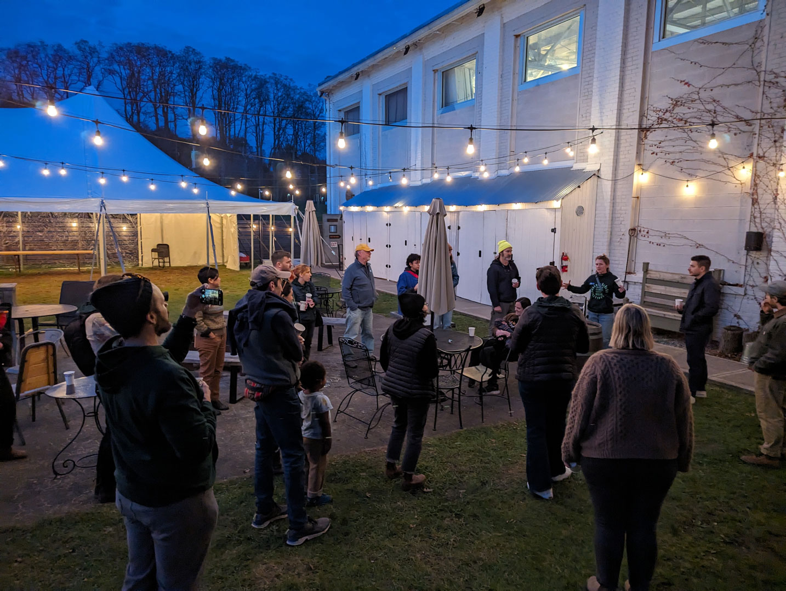
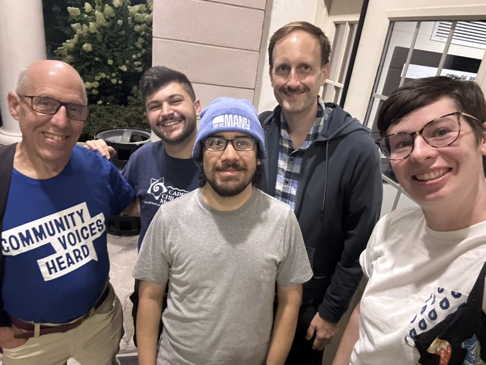
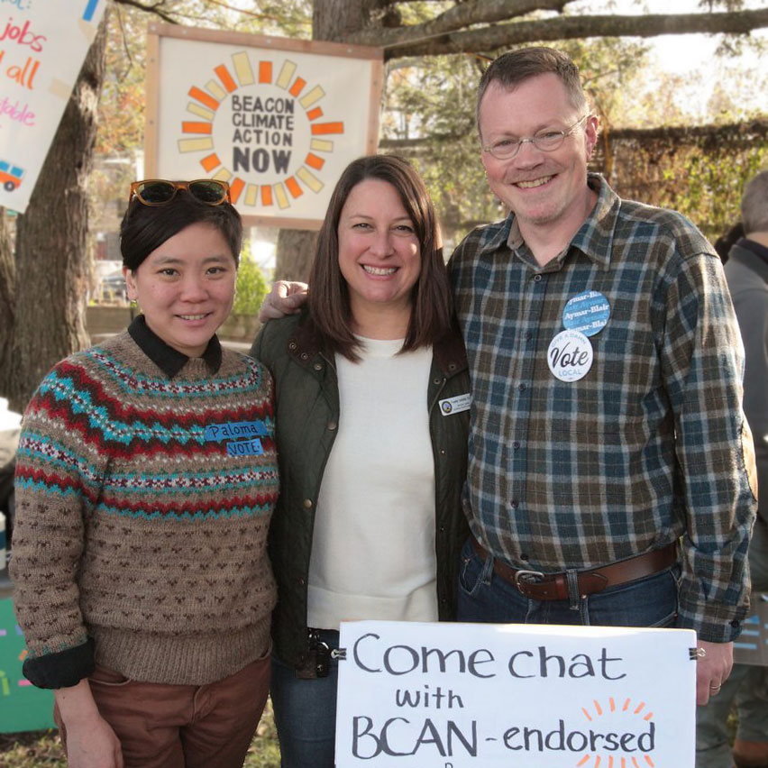
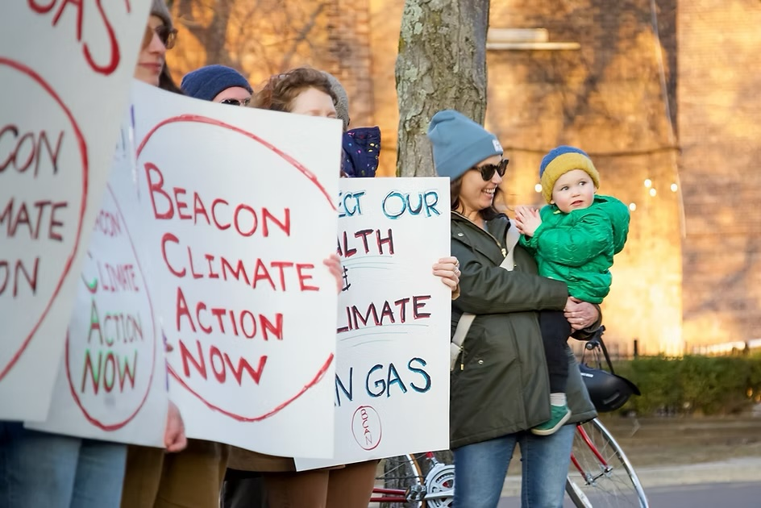
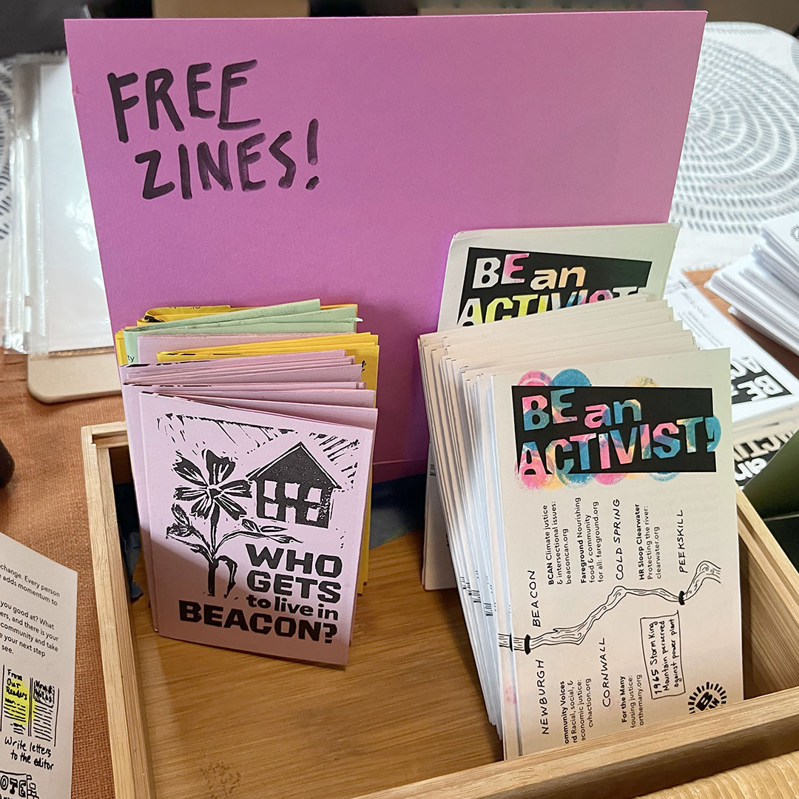

Fighting the climate crisis together
Beacon Climate Action Now
We are neighbors in and around the City of Beacon, New York, working together to create a hopeful, joyful home for us all.
After four years working together for climate justice under the name BCAN, our members reached consensus to sunset the organization in October 2026. We no longer operate collectively, and no one represents BCAN in any capacity.
However, many former BCAN members still actively work together for change in our community. Join us in working with For the Many, Mid-Hudson DSA, For the Many, Fareground, Reunite Migrant Families, Mothers Out Front, Jewish Voice for Peace HV, and many more.
In 2022, we hosted our first Taproots Festival—a community event named for the guiding root of an acorn—and it has become an annual tradition.
Each autumn, Taproots gave our local community a glimpse of our vision for an abundant world: free admission, free food, free music, free activities for children. We invited many partner organizations to share their missions and encourage attendees to join them.
Learn more: Beacon Hosts Annual Taproots Festival

Affordable housing is top of mind for everyone in our community, as proven by the hundreds of conversations we’ve had with neighbors in Beacon and Fishkill over the years. It’s a complicated problem, but we’ve been advocating for equitable solutions that prioritize the needs of everyday people, not developers and private equity-backed landlords.
Through our active engagement with the Beacon City Council, we helped convince Beacon to earmark funds to raise public awareness of tenants’ rights and housing resources and devote staff hours to housing resource coordination and Good Cause Eviction enforcement.
Read more: Our platform overview

In 2024, the Beacon City Council unanimously passed Good Cause Eviction, which will help protect tenants from exorbitant rent hikes and unfair evictions. BCAN worked hard to ensure that Beacon’s law is tailored as much as possible to meet the needs of our community, ensuring that the maximum number of renters are covered.
This win would not have been possible without the hard work of BCAN’s members and allies (including our friends at Community Voices Heard, Housing Justice For All, MHV-DSA, and For the Many), who wrote letters and emails, spoke out week after week at City Council, and met with their ward representatives.
We have a long way to go in building a more affordable, accessible community, but this was a key first step toward keeping people in their homes.
Learn more: Good Cause Eviction protections in NYS

Green jobs. Housing for all. A livable community.
We believe that local government can (and should) make a direct, positive impact on people’s lives. That’s why we’re calling on our leaders to embrace policies that put the needs of our Hudson Valley community and environment first.
To start, we talked to neighbors in Beacon, Fishkill, and Poughkeepsie to understand what folks’ concerns and priorities are—and how we can make the government work better for us all. Our Beautiful Future starts now, and it starts with us.
We also endorsed local candidates in the 2023 election cycle who supported our vision and pledged to champion it while in office.
Read more: Our platform overview

In 2023, Beacon became the third municipality in New York State to pass legislation prohibiting the use of natural gas in nearly all newly constructed buildings and major renovations. The move will save residents money on their utility bills, cap fossil fuel emissions from buildings in the city, and protect the health of children and families.
BCAN spent months talking to our neighbors, collecting over 400 in-person petition signatures, collaborating with two City Council members as allies, and speaking up in City Council meetings, among other tactics. Thanks in part to those efforts, Beacon passed one of the strongest electrification mandates in the country.
This bolstered support for NY State’s All-Electric Buildings Act, which passed soon afterward as part of the state budget.
Learn more: Beacon shifts to electric-only new construction

We make zines to build awareness and mobilize readers toward a better collective future.
In today’s political climate, we find strength in knowing that our actions matter more than ever—and that we are not alone. If you’ve ever felt afraid or powerless in the face of our administration’s beliefs and actions, this zine is for you. We created Be an Activist to empower you to build community, support it, and fight for the future you believe in. No action is too small.
Download: Onscreen PDF | Print-and-fold PDF
Explore: Organizations mentioned in the zine
Learn: Curated activism resources
To advocate for housing justice in Beacon and ways our city can address the housing crisis, we addressed the question on all of our minds with zine: Who Gets to Live in Beacon? This collaborative project by our members incorporates local data, excerpts from canvassing local residents, and our proposed solutions.
Download: Onscreen PDF | Print-and-fold PDF
